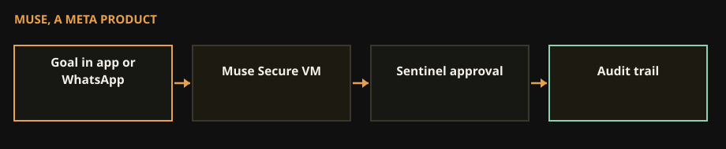
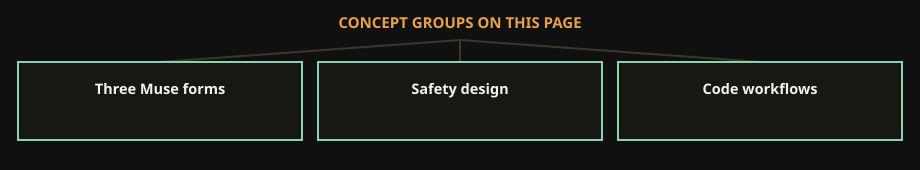

Muse, a Meta product
Muse is a Meta product set: a personal agent, a model family, and a terminal coding agent named Muse Code. No Apple product named Muse appears in sources.

Name fix. User prompt said Muse from Apple. Sources show Muse from Meta only. This page covers Meta Muse. High
Agent facts, official Meta post, 8 September 2026
- A user states a goal in the Muse app or in WhatsApp. Muse plans and acts: browser work, forms, mail, travel and talks.
- Work runs after the app closes. Muse returns on a change or on an approval need. Approval comes before mail send or a purchase.
- Muse Secure VM: one cloud virtual machine per person holds the agent, data and credentials.
- Sentinel: a separate agent on the same machine must approve each item Muse sends to the internet. Sentinel asks the user on need.
- Muse never sees passwords or payment data. Credentials sit in secure storage and run with no view for the model.
- An audit trail records acts. Rights sit per app and per act type, and a user can revoke rights at any time.
- Checkout runs through Link by Stripe with a one time card. The real card stays hid.
Muse Confidential VM, with a user held key and no Meta access, had a later this year promise in launch text. Ship status on 20 November 2026 has no verified source. INSUFFICIENT_EVIDENCE
Price reports in secondary sources: Power at 20 dollars per month and Maximum at 100 dollars per month, with a free tier for most use. Medium
Model facts
Muse Spark came on 8 April 2026 as a native multimodal reason model. The agent launch ran on Spark 1.3. Muse Wonder and Wonder Full came on 12 October 2026. Wonder API price in reports: 4 dollars input and 20 dollars output per 1M tokens. Spark Open weights came on 15 October 2026. Medium
Workflow M1. Goal hand off with approval gates
- State a big goal.
- Muse builds a plan and sorts time and tools.
- Muse acts in its virtual machine over hours or days.
- Muse adds proactive ideas from past notes. Example in launch text: a saved recipe reel turns into a grocery list, a menu with friend diet limits, and invites.
- A user approves send and pay steps from the audit trail.
Workflow M2. Small business operator loop
- Connect mail, ads and finance tools.
- Muse sorts mail and drafts replies.
- Muse builds ad campaigns and reads finance results.
- An owner approves sends and spend.
One newspaper report covers the 29 September 2026 launch. No independent operator workflow sits in sources. Medium Low
Workflow M3. Muse Code multi agent engineering
- Run muse init. The tool writes an AGENTS.md file for session start.
- Commit a git checkpoint before each session. Loop: plan, edit, run, verify.
- Subagents: a lead session spawns child agents with own orders, model, effort and tools in an agents.json file. Isolated child agents get a Muse Code git worktree.
- Workflows: parallel groups, dependent stages and a synthesis step. Docs give a limit of 1,000 child tasks over a workflow life, with a local active child cap of 16.
- Skills cross tools. Muse Code finds skills in own paths and in Claude and Codex skill paths. An import command can pull skills from Claude or Codex sets.
- Observer agents watch one quality axis each, such as memory recall or goal track, and add short notes to the next main turn with no break in flow.
Verbatim prompt from Meta docs sits on the Prompt Vault page.
Demo claim: a Meta WebXR game build cost 1.75 dollars of model use over about four hours of agent run time, with a human on architecture and fixes. Platform post summary only. Medium, self report
Tutorial in eight parts
1. Question
How can an engineer use Muse Code skills from Claude Code and Codex with no rework?
2. Key facts
Meta docs list skill find paths for Claude and Codex sets and an import command for both sets. Source rows 41 and 42.
3. Core concepts
agents.json, workflow, observer agent, worktree isolation. A workflow holds groups, stages and synthesis in one firm form.
4. Patterns and feedback loops
Init, checkpoint, plan, spawn, verify, synthesise. Small tight edits stay on the main agent per docs guidance.
5. Conflicts and common errors
A common error treats skill import as proof of full parity. Test each skill in the new tool. Hooks and rights can differ per tool.
6. Hypotheses
Skills may form the first true cross tool program format. Muse Code import acts support the claim. Long term parity stays open.
7. Decision support
Keep one skill source repo. Import to each tool. Run one test task per tool after each skill change.
8. One bounded next action
Pick three skills you own. Import each skill to Muse Code. Run one small task per skill and log pass or fail per tool.

Visual map of this page
Three views of one page: a Mermaid flow for work order, a markmap for concept groups, and a read guide for the flow.
Mermaid source, for offline read
flowchart LR
A[User goal] --> B[Muse plans]
B --> C[Acts in Secure VM]
C --> D{Sentinel check}
D -->|clear| E[Send to internet]
D -->|risk| F[User approval]
F --> CHow to read the flow diagram. Step 1: start at the left box. Step 2: follow each arrow to the next stage. Step 3: at a branch box, read both paths before a choice. Step 4: a loop arrow means work returns for one more pass vs a test.
Markmap: concepts on this page
- Muse, a Meta product
- Three Muse forms
- Personal agent
- Model family
- Muse Code
- Safety design
- Secure VM per person
- Sentinel approver
- One time card
- Code workflows
- Subagents and worktrees
- Workflows to 1,000 tasks
- Skills import
- Three Muse forms